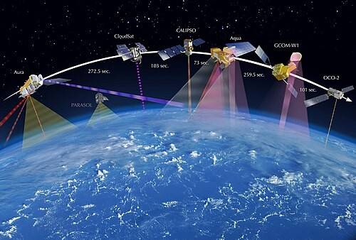
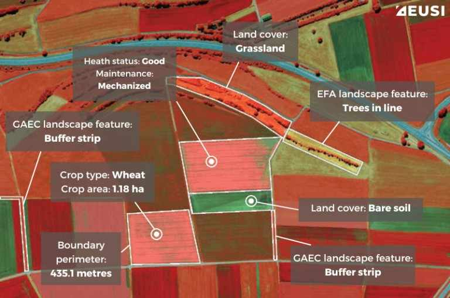
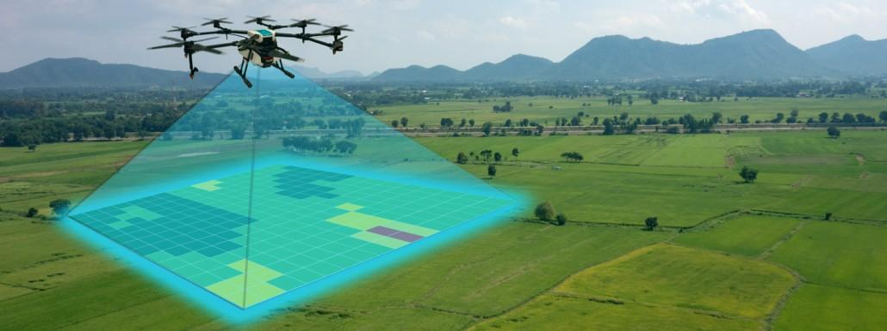

<!DOCTYPE html>
<html lang="en">

<head>
    <meta charset="UTF-8">
    <title>Satellites & Remote Sensing | Modern Technologies</title>
    <meta name="viewport" content="width=device-width, initial-scale=1.0">
    <link rel="stylesheet" href="assets/css/style.css">

<!DOCTYPE html>
<html lang="en">

<head>
    <meta charset="UTF-8">
    <title>Satellites & Remote Sensing | Modern Technologies</title>
    <meta name="viewport" content="width=device-width, initial-scale=1.0">
    <link rel="stylesheet" href="assets/css/style.css">

    <style>
        * {
            box-sizing: border-box;
        }

        body {
            margin: 0;
            font-family: system-ui, -apple-system, BlinkMacSystemFont, "Segoe UI", sans-serif;
            background:
                radial-gradient(circle at 0% 0%, #312e81 0, transparent 55%),
                radial-gradient(circle at 100% 100%, #11b33f 0, transparent 55%),
                radial-gradient(circle at 100% 0%, #22c55e 0, transparent 45%),
                linear-gradient(135deg, #020617 0%, #020617 40%, #000000 100%);
            color: #ffffff;
            /* all base text white */
            min-height: 100vh;
        }

        a {
            color: #ffffff;
            /* links white */
        }

        /* Glassmorphism card */
        .glass-card {
            background: rgba(15, 23, 42, 0.55);
            backdrop-filter: blur(18px);
            -webkit-backdrop-filter: blur(18px);
            border-radius: 18px;
            box-shadow: 0 18px 40px rgba(0, 0, 0, 0.7);
            border: none;
            transition: transform 0.2s ease, box-shadow 0.2s ease, background 0.2s ease;
        }

        .glass-card:hover {
            transform: translateY(-3px);
            background: rgba(15, 23, 42, 0.8);
            box-shadow: 0 24px 70px rgba(0, 0, 0, 0.85);
        }

        header {
            position: sticky;
            top: 0;
            z-index: 100;
            background: rgba(10, 10, 24, 0.85);
            backdrop-filter: blur(20px);
            -webkit-backdrop-filter: blur(20px);
        }

        .nav-container {
            max-width: 1120px;
            margin: 0 auto;
            padding: 12px 20px;
            display: flex;
            align-items: center;
            justify-content: space-between;
        }

        .logo {
            font-weight: 700;
            font-size: 1rem;
            letter-spacing: 0.08em;
            text-transform: uppercase;
            color: #22c55e;
            /* logo green */
        }

        nav a {
            margin-left: 18px;
            text-decoration: none;
            color: #ffffff;
            font-size: 0.9rem;
            position: relative;
            padding-bottom: 2px;
        }

        nav a::after {
            content: "";
            position: absolute;
            left: 0;
            bottom: 0;
            width: 0;
            height: 2px;
            background: linear-gradient(90deg, #a855f7, #22c55e);
            transition: width 0.22s ease;
        }

        nav a:hover::after {
            width: 100%;
        }

        main.container {
            max-width: 1120px;
            margin: 28px auto 40px;
            padding: 0 20px 32px;
        }

        /* Hero */
        .hero {
            display: grid;
            grid-template-columns: minmax(0, 3fr) minmax(0, 2.3fr);
            gap: 20px;
            padding: 20px 20px 18px;
            margin-bottom: 26px;
        }

        .tag {
            display: inline-block;
            padding: 4px 12px;
            border-radius: 999px;
            background: rgba(129, 140, 248, 0.25);
            color: #ffffff;
            font-size: 0.75rem;
            font-weight: 600;
            text-transform: uppercase;
            letter-spacing: 0.12em;
            margin-bottom: 10px;
        }

        .section-title {
            font-size: 1.8rem;
            margin: 0 0 8px;
            color: #22c55e;
            /* h1 green */
        }

        .section-subtitle {
            margin: 0 0 16px;
            color: #ffffff;
            font-size: 0.98rem;
            max-width: 40rem;
        }

        .hero-highlight h2 {
            margin: 0 0 6px;
            font-size: 1.1rem;
            color: #22c55e;
            /* h2 green */
        }

        .hero-highlight p {
            margin: 0;
            font-size: 0.95rem;
            color: #ffffff;
        }

        .hero-visual {
            position: relative;
            overflow: hidden;
            border-radius: 16px;
            min-height: 220px;
            background:
                radial-gradient(circle at 20% 20%, rgba(129, 140, 248, 0.3), transparent 60%),
                radial-gradient(circle at 80% 70%, rgba(236, 72, 153, 0.25), transparent 55%),
                radial-gradient(circle at 50% 0%, rgba(34, 197, 94, 0.18), transparent 55%);
        }

        .orbit {
            position: absolute;
            border-radius: 999px;
            border: 1px dashed rgba(192, 132, 252, 0.6);
        }

        .orbit.o1 {
            inset: 18px 24px;
        }

        .orbit.o2 {
            inset: 34px 52px;
        }

        .satellite-dot {
            position: absolute;
            width: 28px;
            height: 28px;
            border-radius: 50%;
            background: radial-gradient(circle, #f9fafb 0, #a855f7 40%, #4c1d95 100%);
            top: 26px;
            right: 32px;
            box-shadow: 0 0 20px rgba(168, 85, 247, 0.9);
        }

        .earth-disc {
            position: absolute;
            width: 96px;
            height: 96px;
            border-radius: 999px;
            bottom: 18px;
            left: 18px;
            background:
                radial-gradient(circle at 30% 20%, #bbf7d0 0, transparent 55%),
                radial-gradient(circle at 70% 80%, #22c55e 0, transparent 60%),
                radial-gradient(circle at 50% 50%, #1d4ed8 0, #020617 68%);
            box-shadow: 0 0 24px rgba(59, 130, 246, 0.7);
        }

        .hero-caption {
            position: absolute;
            bottom: 16px;
            right: 18px;
            font-size: 0.8rem;
            color: #ffffff;
            text-align: right;
        }

        /* Generic sections */
        .text-box {
            padding: 18px 18px 16px;
            margin-bottom: 18px;
        }

        .text-box h2 {
            margin-top: 0;
            margin-bottom: 8px;
            font-size: 1.22rem;
            color: #22c55e;
            /* h2 green */
        }

        .text-box h3 {
            margin-top: 10px;
            margin-bottom: 4px;
            font-size: 1rem;
            color: #22c55e;
            /* h3 green */
        }

        .text-box p {
            margin-top: 0;
            margin-bottom: 8px;
            font-size: 0.95rem;
            line-height: 1.6;
            color: #ffffff;
        }

        .text-box ul,
        .text-box ol {
            margin: 4px 0 6px;
            padding-left: 20px;
        }

        .text-box li {
            margin-bottom: 4px;
            font-size: 0.93rem;
            color: #ffffff;
        }

        /* Section images */
        .section-image {
            width: 100%;
            border-radius: 14px;
            margin: 8px 0 10px;
            object-fit: cover;
            max-height: 220px;
            display: block;
            border: 1px solid rgba(248, 250, 252, 0.08);
        }

        .image-caption {
            font-size: 0.8rem;
            color: #ffffff;
            opacity: 0.9;
            margin-bottom: 4px;
        }

        /* Satellite types strip */
        .sat-types {
            display: grid;
            grid-template-columns: repeat(auto-fit, minmax(190px, 1fr));
            gap: 10px;
            margin-top: 10px;
        }

        .sat-type-pill {
            padding: 8px 10px;
            border-radius: 14px;
            background: rgba(76, 29, 149, 0.7);
            font-size: 0.85rem;
            color: #ffffff;
        }

        .sat-type-pill b {
            color: #22c55e;
            /* key text green */
        }

        /* Diagram */
        .diagram {
            padding: 14px;
            margin-bottom: 18px;
            font-size: 0.94rem;
            color: #ffffff;
        }

        .back-link {
            margin-top: 14px;
            font-size: 0.9rem;
            color: #ffffff;
        }

        .back-link a {
            color: #ffffff;
            text-decoration: none;
            font-weight: 500;
        }

        .back-link a:hover {
            text-decoration: underline;
        }

        footer {
            text-align: center;
            padding: 12px 10px 16px;
            font-size: 0.8rem;
            color: #ffffff;
            background: rgba(15, 23, 42, 0.9);
            backdrop-filter: blur(18px);
            -webkit-backdrop-filter: blur(18px);
        }

        @media (max-width: 768px) {
            .hero {
                grid-template-columns: 1fr;
            }

            .nav-container {
                flex-direction: column;
                align-items: flex-start;
                gap: 6px;
            }

            nav a {
                margin-left: 0;
                margin-right: 16px;
                font-size: 0.88rem;
            }

            .section-title {
                font-size: 1.5rem;
            }
        }
    </style>
</head>

<body>
    <!-- your existing HTML body content below is unchanged -->
    <!-- HERO, sections, images etc. -->
    <!-- ... -->
</body>

</html>

</head>

<body>
    <header>
        <div class="nav-container">
            <div class="logo">Agriculture Using Modern Technologies</div>
            <nav>
                <a href="index.html">Home</a>
                <a href="technologies.html">All Technologies</a>
                <a href="contact.html">Contact</a>
            </nav>
        </div>
    </header>

    <main class="container">
        <!-- HERO -->
        <section class="hero glass-card">
            <div>
                <span class="tag">Technology Detail Page</span>
                <h1 class="section-title">Satellites & Remote Sensing in Agriculture</h1>
                <p class="section-subtitle">
                    Satellites orbiting the earth capture images and climate data that help monitor crop growth,
                    soil moisture, rainfall and drought across large areas, turning space‑based images into practical
                    advice for farmers on the ground. [web:23][web:31]
                </p>
                <div class="hero-highlight">
                    <h2>From Space to Farm Decisions</h2>
                    <p>
                        Time‑series satellite images show how fields change every few days, allowing early detection
                        of stress and supporting decisions about when to irrigate, fertilize or protect crops.
                        [web:22][web:31]
                    </p>
                </div>
            </div>

            <div class="hero-visual">
                <div class="orbit o1"></div>
                <div class="orbit o2"></div>
                <div class="satellite-dot"></div>
                <div class="earth-disc"></div>
                <div class="hero-caption">
                    Live crop monitoring<br>
                    from multi‑spectral satellites
                </div>
            </div>
        </section>

        <!-- 1. What is Remote Sensing -->
        <section class="text-box glass-card">
            <h2>1. What is Satellite-based Remote Sensing?</h2>

            

            <p class="image-caption">
                Satellites in polar orbits scan the same farmlands again and again, creating a living history of each
                field. [web:23][web:31]
            </p>

            <p>
                Remote sensing means collecting information about the earth’s surface from a distance, instead of
                measuring directly on the ground. Satellite-based remote sensing uses sensors on satellites to record
                reflected sunlight and emitted thermal radiation from crops, soil and water. [web:23][web:24]
            </p>
            <p>
                Optical bands in the visible and near‑infrared range are sensitive to leaf chlorophyll and structure,
                while short‑wave infrared and thermal bands help detect soil moisture and surface temperature, making it
                possible to map vegetation condition and water stress over huge regions. [web:21][web:24]
            </p>
        </section>

        <!-- 2. Types of satellite data -->
        <section class="text-box glass-card">
            <h2>2. Types of Satellite Data Used in Agriculture</h2>

            

            <p class="image-caption">
                False‑colour images highlight healthy vegetation in bright tones and stressed crops in dull or brownish
                tones. [web:23][web:31]
            </p>

            <p>
                Agriculture commonly uses optical, radar and thermal satellite data, each giving a different view of
                the same field and helping answer questions about crop vigor, soil moisture and weather impacts.
                [web:21][web:23]
            </p>

            <div class="sat-types">
                <div class="sat-type-pill">
                    <b>Optical (multispectral):</b> RGB and near‑infrared bands used to calculate indices such as NDVI
                    and NDRE for crop vigor, biomass and canopy cover. [web:21][web:31]
                </div>
                <div class="sat-type-pill">
                    <b>Radar (SAR):</b> Active microwave signals that penetrate clouds and are sensitive to surface
                    roughness and moisture, useful during rainy seasons or cloudy periods. [web:21][web:32]
                </div>
                <div class="sat-type-pill">
                    <b>Thermal:</b> Measures land surface temperature to detect water stress, hot spots and
                    irrigation inefficiencies in fields and orchards. [web:21][web:22]
                </div>
            </div>
        </section>

        <!-- 3. How it works in agriculture -->
        <section class="text-box glass-card">
            <h2>3. How Does It Work in Agriculture?</h2>

            

            <p class="image-caption">
                Web and mobile platforms turn complex satellite data into simple maps that farmers and advisors can use
                in the field. [web:23][web:31]
            </p>

            <ul>
                <li>Satellites capture images of farmland every few days, building a time‑series of crop development for
                    each field. [web:23][web:31]</li>
                <li>Vegetation indices such as NDVI and others are calculated to evaluate plant vigor, gaps in stand and
                    possible damage. [web:21][web:31]</li>
                <li>Soil moisture, rainfall and temperature products reveal drought, flooding and heat‑stress risks at
                    regional scale. [web:22][web:23]</li>
                <li>Cloud platforms process raw images into ready‑to‑use field maps that can be viewed in web dashboards
                    or mobile apps. [web:23][web:32]</li>
                <li>Farmers, agronomists and governments use these maps to plan irrigation, fertilizer rates, scouting
                    routes and contingency actions. [web:22][web:25]</li>
            </ul>
        </section>

        <!-- 4. Live working examples -->
        <section class="text-box glass-card">
            <h2>4. Live Working of Satellites in Agriculture</h2>

            

            <p class="image-caption">
                Crop monitoring systems combine satellite time‑series with field checks to validate alerts and fine‑tune
                recommendations. [web:31][web:34]
            </p>

            <ul>
                <li>
                    National crop monitoring programmes use satellite time‑series to track sowing progress, growth
                    stages
                    and harvest of major crops almost in real time, improving yield forecasts and food security
                    planning. [web:27][web:34]
                </li>
                <li>
                    Precision platforms use high‑resolution imagery to divide fields into zones and generate
                    variable‑rate
                    fertilizer or pesticide prescriptions that machinery can follow automatically. [web:23][web:31]
                </li>
                <li>
                    Insurance and disaster‑management agencies rely on satellite‑based maps to assess drought or flood
                    damage
                    objectively and support quicker claim settlement and relief targeting. [web:22][web:25]
                </li>
                <li>
                    Free and commercial image services provide continuous updates from missions such as Sentinel and
                    other
                    high‑resolution constellations, giving near‑daily views of crop condition in many regions.
                    [web:29][web:32]
                </li>
            </ul>
        </section>

        <!-- 5. Why we use satellite data -->
        <section class="text-box glass-card">
            <h2>5. Why Are We Using Satellite Data? (Advantages)</h2>

            <ul>
                <li>Very large‑area coverage makes it possible to monitor entire districts, states or countries at low
                    cost per hectare. [web:21][web:23]</li>
                <li>Long historical archives enable trend analysis of droughts, cropping patterns and vegetation change
                    over many seasons. [web:23][web:32]</li>
                <li>Early warning of drought, flood and crop failure risk supports timely advisory and input supply
                    planning. [web:22][web:27]</li>
                <li>Objective and repeatable indicators help design and evaluate policies, crop insurance schemes and
                    subsidy programmes. [web:25][web:34]</li>
            </ul>
        </section>

        <!-- 6. Limitations -->
        <section class="text-box glass-card">
            <h2>6. Limitations / Challenges</h2>
            <ul>
                <li>Spatial resolution of some sensors is too coarse to capture very small or fragmented fields
                    accurately. [web:21]</li>
                <li>Cloud cover blocks optical images during rainy seasons, requiring radar data and additional
                    expertise. [web:21][web:24]</li>
                <li>Converting raw satellite data into simple, trustworthy advisories needs robust processing tools and
                    trained staff. [web:25][web:31]</li>
            </ul>
        </section>

        <!-- Diagram -->
        <section class="diagram glass-card">
            <b>Simple Process Flow:</b><br>
            Satellite Sensors → Capture Earth Data → Cloud Processing Platform →
            Field‑Level Maps & Indices → Advisors / Apps → Farmer Action on the Field
        </section>

        <p class="back-link">
            <a href="assets/technologies.html">← Back to Technologies List</a>
        </p>
    </main>

    <footer>
        &copy; 2025 Agriculture Using All Modern Technologies • Satellites & Remote Sensing
    </footer>
</body>

</html>